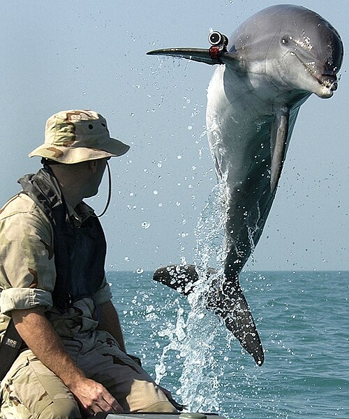

Delfin – ogólne określenie wodnych ssaków z rzędu waleni, z rodzin Delphinidae (delfiny oceaniczne) i Platanistidae (delfiny słodkowodne), obejmujące średniej wielkości walenie charakteryzujące się wydłużonym pyskiem i obecnością melonu. W ściślejszym ujęciu odnosi się ono też do rodzaju należącego do rodziny delfinowatych.

Delfiny zamieszkują morza obu półkul i wiele rzek strefy równikowej. Często przebywają w gromadach (stadach) od kilku do kilkuset osobników, o wyraźnie zaznaczonej hierarchii. Odbywają dalekie wędrówki. Mają zdolność do echolokacji, a przynajmniej jeden gatunek (Sotali guianensis) także do elektrorecepcji. Porozumiewają się za pomocą dźwięków[1], określanych jako język delfinów.
Strona, z której byli wykorzystane materialy:
https://pl.wikipedia.org/wiki/Delfin